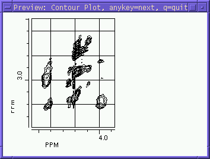
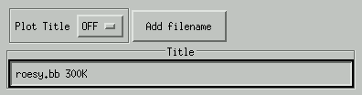

Example of a preview window.
Bring up a popup menu to enter a tiltle for the plot. The title will be plotted at the top of the plot.

Plot title
If set to off, no title will be plotted.
Add filename
Automatically add the name of the current NMR data file to the title.Title
Enter the text of the title here.
Options specific for 1D plots.
Parameters X axis
Parameters Y axis
Grid can be no, yes and auto. I Grid is no, no grid will be drawn. If grid is yes, define how to draw a grid. Xline/unit and Yline/unit define how many grid lines per current unit (= ppm,Hz,etc) are drawn. For example, if Xline/unit is 2, and the unit is ppm, then a grid line is drawn every 0.5 ppm. If grid is set to auto, the number of lines/unit will be computed automatically.